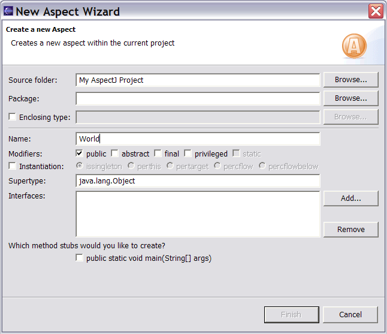
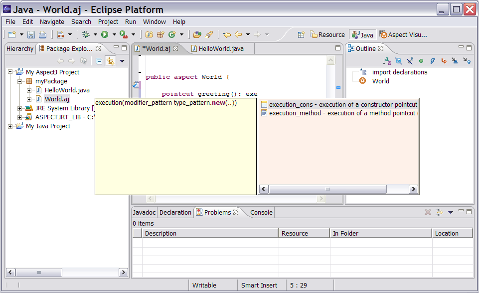
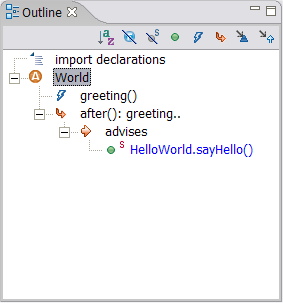
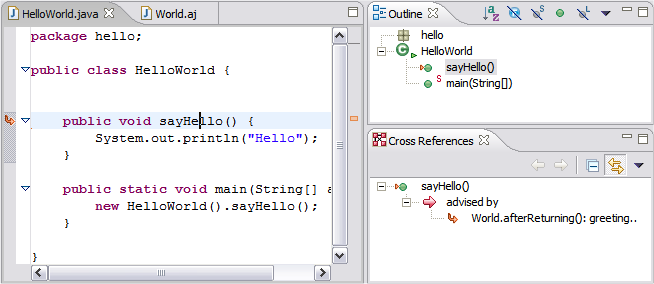
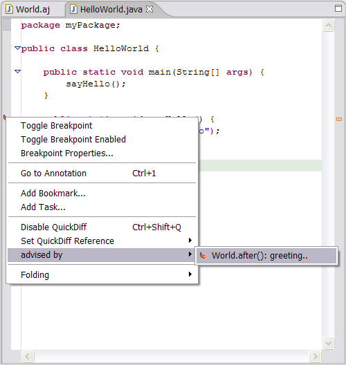

Copyright © 2004 Eclipse.org.
All Rights Reserved
Select File
-> New -> Aspect. The new aspect wizard appears. Name your aspect “World”
and click finish.

Start typing inside the body of the aspect: “pointcut greeting() : exe” and then hit “Ctrl+Space” (code completion). The editor will suggest auto-completions for the execution pointcut:

Select “execution_method.” (AJDT defines a range of code completion templates for AspectJ constructs – from the window menu select preferences, and then Java -> editor -> templates to see the full list). Edit the buffer so it looks as follows and then save it:
/*
* Created on
*
* To change this generated comment go to
* Window>Preferences>Java>Code
Generation>Code and Comments
*/
/**
* To change this generated comment
go to
* Window>Preferences>Java>Code
Generation>Code and
Comments
*/
public aspect
World {
pointcut greeting()
: execution(* HelloWorld.sayHello(..));
after() : greeting() {
System.out.println("Hello to you
too...");
}
}
(we should really have used after()
returning advice here…)
Press the build button
and the outline view populates. Expand the “after(): greeting..” node.

You can see that this advice is affecting the HelloWorld.sayHello() method. Clicking on the “HelloWorld.sayHello()” node in the outline takes you to the declaration of HelloWorld.sayHello(). Notice the gutter annotation in the editor buffer (highlighted) and that the “sayHello” method in the outline view shows that it is advised by the World aspect.

Selecting the “World.after()…” node in the outline view takes you back to the advice declaration. Right-clicking on the gutter annotation brings up a context menu that also allows you to navigate to the advice.
